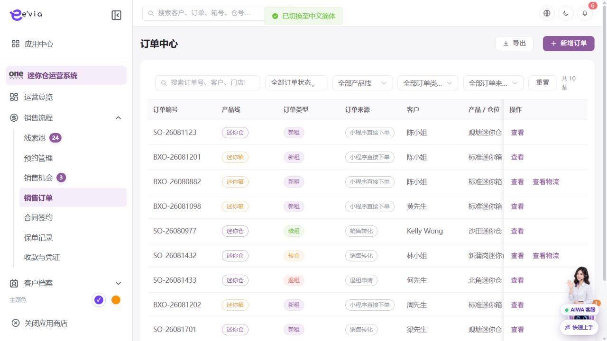
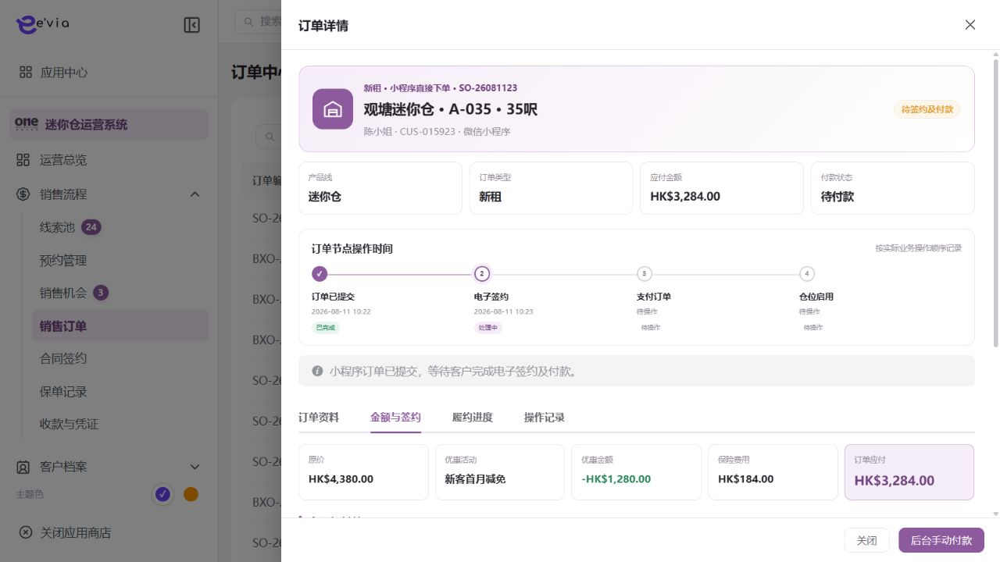

订单中心 PRD
下载 Word 文档订单中心 PRD
运营后台研发详细需求规格 · V2.2 · 2026-09-09
1 文档目标与范围
统一管理迷你仓、迷你箱、续租、退租、转仓和衍生商品订单及其价格、审批和履约状态。 本文档明确页面字段、操作流程、业务规则、跨端契约、权限和验收条件。
| 属性 | 内容 |
|---|---|
| 文档编号 | OS-OPS-PRD-05 |
| 产品基线 | AiwaBot产品原型 V3.2 与 OneStorage运营后台原型 V1.1 |
| 版本 | V2.2 2026-09-09 |
1.1 原型界面依据
本模块界面直接取自 AiwaBot产品原型-v3.2.html。真实截图及功能点对应说明见“界面与功能对应说明”。
2 界面与页面结构
2.1 界面与功能对应说明
以下真实原型截图用于确定页面区域、入口和交互位置；字段校验、状态变化和服务端处理以本PRD功能规格为准。

| 说明项 | 界面辅助说明 |
|---|---|
| 对应功能点 | OS-OPS-PRD-05-FP01 新增订单 |
| 页面区域 | 订单中心列表与筛选由查询条件、结果列表、状态标识、行级操作和分页区组成。 |
| 交互要求 | 查询条件可组合、重置并在返回时保留；列表与导出共用同一数据范围；按钮依据权限、状态和allowedActions显示。 |
| 状态与权限 | 动作由allowedActions控制；无权限隐藏入口，接口仍执行403校验并记录审计。 |

| 说明项 | 界面辅助说明 |
|---|---|
| 对应功能点 | OS-OPS-PRD-05-FP02 提交审批；OS-OPS-PRD-05-FP03 更新订单；OS-OPS-PRD-05-FP04 取消订单；OS-OPS-PRD-05-FP05 查看物流 |
| 页面区域 | 详情页由对象摘要、关联业务、可执行动作、附件凭证和状态时间线组成。 |
| 交互要求 | 动作按钮完全依据allowedActions显示；每次动作后回源刷新状态、版本和时间线，冲突时禁止旧数据覆盖。 |
| 状态与权限 | 动作由allowedActions控制；无权限隐藏入口，接口仍执行403校验并记录审计。 |
2.3 筛选条件
| 筛选项 | 规则 |
|---|---|
| 订单号、客户、门店或仓位 | 支持组合查询、重置和返回保留。 |
| 产品线 | 支持组合查询、重置和返回保留。 |
| 订单类型 | 支持组合查询、重置和返回保留。 |
| 订单状态 | 支持组合查询、重置和返回保留。 |
| 付款状态 | 支持组合查询、重置和返回保留。 |
| 签约状态 | 支持组合查询、重置和返回保留。 |
| 负责人 | 支持组合查询、重置和返回保留。 |
| 创建时间 | 支持组合查询、重置和返回保留。 |
3 列表字段规格
>| 字段ID | 字段 | 来源 | 展示与交互规则 |
|---|---|---|---|
| OS-OPS-PRD-05-L01 | 订单编号 | 服务端主键或业务编号 | 完整展示并支持复制；唯一且不可使用展示名称代替。 |
| OS-OPS-PRD-05-L02 | 产品线 | 业务主域 | 详情与导出保持一致；空值显示—，不使用模拟值补齐。 |
| OS-OPS-PRD-05-L03 | 订单类型 | 业务主域 | 详情与导出保持一致；空值显示—，不使用模拟值补齐。 |
| OS-OPS-PRD-05-L04 | 订单来源 | 业务主域 | 详情与导出保持一致；空值显示—，不使用模拟值补齐。 |
| OS-OPS-PRD-05-L05 | 客户 | 服务端/关联主数据 | 显示客户名称和客户编号，可跳转客户档案。 |
| OS-OPS-PRD-05-L06 | 产品或仓位 | 业务主域 | 详情与导出保持一致；空值显示—，不使用模拟值补齐。 |
| OS-OPS-PRD-05-L07 | 订单状态 | 服务端枚举 | 以标签显示；筛选、导出和详情使用同一枚举文案。 |
| OS-OPS-PRD-05-L08 | 订单金额 | 财务或报价主域 | 显示币种和两位小数；不得用格式化字符串参与计算。 |
| OS-OPS-PRD-05-L09 | 创建时间 | 服务端/关联主数据 | 服务器创建时间，格式YYYY-MM-DD HH:mm:ss。 |
| OS-OPS-PRD-05-L10 | 负责人 | 服务端/关联主数据 | 显示姓名，离职或停用账号保留历史名称。 |
| OS-OPS-PRD-05-L11 | 物流状态 | 服务端枚举 | 以标签显示；筛选、导出和详情使用同一枚举文案。 |
| OS-OPS-PRD-05-L12 | 操作 | 服务端/关联主数据 | 根据allowedActions显示查看、编辑及状态动作；后端再次鉴权。 |
4 新增与编辑表单
| 字段ID | 字段 | 控件 | 必填 | 校验与保存规则 |
|---|---|---|---|---|
| OS-OPS-PRD-05-F01 | 关联销售机会 | 文本框 | 条件必填 | 去除首尾空格；保存原始值与标准化值。 |
| OS-OPS-PRD-05-F02 | 订单类型 | 单选或下拉选择 | 必填 | 选项来自服务端字典；提交编码值，界面显示名称。 |
| OS-OPS-PRD-05-F03 | 负责人 | 单选或下拉选择 | 必填 | 选项来自服务端字典；提交编码值，界面显示名称。 |
| OS-OPS-PRD-05-F04 | 订单状态 | 单选或下拉选择 | 必填 | 选项来自服务端字典；提交编码值，界面显示名称。 |
| OS-OPS-PRD-05-F05 | 产品线 | 文本框 | 条件必填 | 去除首尾空格；保存原始值与标准化值。 |
| OS-OPS-PRD-05-F06 | 店铺或仓点 | 单选或下拉选择 | 必填 | 选项来自服务端字典；提交编码值，界面显示名称。 |
| OS-OPS-PRD-05-F07 | 仓位或产品 | 文本框 | 条件必填 | 去除首尾空格；保存原始值与标准化值。 |
| OS-OPS-PRD-05-F08 | 数量 | 数字输入 | 条件必填 | 仅允许业务配置范围内的整数；服务端再次校验。 |
| OS-OPS-PRD-05-F09 | 起租日期 | 日期或日期时间 | 必填 | 服务端校验起止顺序、营业日和截止规则。 |
| OS-OPS-PRD-05-F10 | 租期 | 数字输入 | 条件必填 | 仅允许业务配置范围内的整数；服务端再次校验。 |
| OS-OPS-PRD-05-F11 | 到期日期 | 日期或日期时间 | 必填 | 服务端校验起止顺序、营业日和截止规则。 |
| OS-OPS-PRD-05-F12 | 库存处理 | 文本框 | 条件必填 | 去除首尾空格；保存原始值与标准化值。 |
| OS-OPS-PRD-05-F13 | 关联报价 | 文本框 | 条件必填 | 去除首尾空格；保存原始值与标准化值。 |
| OS-OPS-PRD-05-F14 | 原价 | 文本框 | 条件必填 | 去除首尾空格；保存原始值与标准化值。 |
| OS-OPS-PRD-05-F15 | 优惠金额 | 金额输入 | 条件必填 | 输入大于等于0，最多两位小数；服务端以最小货币单位重算。 |
| OS-OPS-PRD-05-F16 | 保险费用 | 金额输入 | 条件必填 | 输入大于等于0，最多两位小数；服务端以最小货币单位重算。 |
| OS-OPS-PRD-05-F17 | 批核后的自动动作 | 文本框 | 条件必填 | 去除首尾空格；保存原始值与标准化值。 |
| OS-OPS-PRD-05-F18 | 订单备注 | 多行文本 | 条件必填 | 最多500字；拒绝或异常原因不得只输入空白。 |
| OS-OPS-PRD-05-F19 | 备注 | 多行文本 | 条件必填 | 最多500字；拒绝或异常原因不得只输入空白。 |
5 功能点详细设计
| 功能编号 | 功能点 | 目标 |
|---|---|---|
| OS-OPS-PRD-05-FP01 | 新增订单 | 销售订单优先从OP转化；人工补录需记录来源和原因。 |
| OS-OPS-PRD-05-FP02 | 提交审批 | 校验价格、折扣、库存、合同模板和付款计划。 |
| OS-OPS-PRD-05-FP03 | 更新订单 | 仅allowedActions允许的字段可编辑，金额变化生成新价格版本。 |
| OS-OPS-PRD-05-FP04 | 取消订单 | 检查支付、合同、库存和履约副作用并执行补偿。 |
| OS-OPS-PRD-05-FP05 | 查看物流 | 迷你箱订单显示箱号、预约、运单和节点时间。 |
5.1 新增订单
功能编号：OS-OPS-PRD-05-FP01
功能目的：销售订单优先从OP转化；人工补录需记录来源和原因。
使用角色与入口：具备本模块创建权限的运营人员；从模块列表右上角新增入口或关联对象快捷入口进入。入口显示前校验菜单、动作和数据范围。
前置条件：用户登录有效并具备创建或批量权限；关联主数据有效且属于dataScope；页面已加载最新字典、业务配置和allowedActions。
界面操作：打开新增界面，按页面分组录入关联销售机会、订单类型、负责人、订单状态、产品线、店铺或仓点、仓位或产品、数量、起租日期、租期、到期日期、库存处理；关联对象使用检索选择。点击保存前完成字段级和跨字段校验。
系统处理：服务端使用clientRequestId幂等校验，在事务内生成业务编号、主对象、初始状态和审计记录；事务提交后发布领域事件。销售订单优先从OP转化；人工补录需记录来源和原因。
业务规则：销售机会转订单必须保持sourceLeadId和opportunityId；订单金额=原价-优惠+服务费+保险+按金，后端重新计算；已签署合同或已付款订单的关键字段不得直接修改。服务端必须重复校验。
成功结果：页面提示“新增订单成功”，刷新对象状态、version、allowedActions、关联对象和时间线；如产生异步任务，同时显示任务编号和进度入口。
异常与恢复：400保留输入；403拒绝并审计；409要求刷新；超时按clientRequestId查询；部分成功显示明细和补偿入口。
跨端影响：客户小程序展示本人订单及allowedActions；接收端打开后重新鉴权并回源。
验收条件：在允许状态下完成新增订单时仅产生一次预期数据变化和一次审计记录；越权、错误状态、重复提交及版本冲突均不得产生重复对象或越级状态。
5.2 提交审批
功能编号：OS-OPS-PRD-05-FP02
功能目的：校验价格、折扣、库存、合同模板和付款计划。
使用角色与入口：具备审批、财务或复核权限的人员；从待办中心、列表行操作或详情页审批区进入。入口显示前校验菜单、动作和数据范围。
前置条件：用户登录有效；目标对象存在且属于用户dataScope；当前状态包含该动作；页面持有最新version和allowedActions。涉及金额、库存、附件或第三方结果时必须回源确认。
界面操作：详情页展示申请信息、金额/附件、历史意见及订单类型、负责人、订单状态、店铺或仓点、起租日期、到期日期、优惠金额、订单备注、备注、订单编号；选择通过或拒绝，拒绝原因必填，提交前二次确认。
系统处理：服务端调用POST /ops/v1/orders/{id}/actions/{action}，校验权限、当前状态、expectedVersion和业务不变量，在事务中写入状态及时间线。校验价格、折扣、库存、合同模板和付款计划。
业务规则：销售机会转订单必须保持sourceLeadId和opportunityId；订单金额=原价-优惠+服务费+保险+按金，后端重新计算。服务端必须重复校验。
成功结果：页面提示“提交审批成功”，刷新对象状态、version、allowedActions、关联对象和时间线；如产生异步任务，同时显示任务编号和进度入口。
异常与恢复：400保留输入；403拒绝并审计；409要求刷新；超时按clientRequestId查询；部分成功显示明细和补偿入口。
跨端影响：小程序支付结果以服务端回调为准；接收端打开后重新鉴权并回源。
验收条件：在允许状态下完成提交审批时仅产生一次预期数据变化和一次审计记录；越权、错误状态、重复提交及版本冲突均不得产生重复对象或越级状态。
5.3 更新订单
功能编号：OS-OPS-PRD-05-FP03
功能目的：仅allowedActions允许的字段可编辑，金额变化生成新价格版本。
使用角色与入口：当前对象负责人、被分派执行人或获授权管理员；从列表行操作、详情页主操作区或待办入口进入。入口显示前校验菜单、动作和数据范围。
前置条件：用户登录有效；目标对象存在且属于用户dataScope；当前状态包含该动作；页面持有最新version和allowedActions。涉及金额、库存、附件或第三方结果时必须回源确认。
界面操作：在详情页执行更新订单，填写或核对订单类型、负责人、订单状态、店铺或仓点、起租日期、到期日期、优惠金额、订单备注、备注、订单编号；界面随步骤显示当前节点、下一步和可撤回条件。
系统处理：服务端调用POST /ops/v1/orders/{id}/actions/{action}，校验权限、当前状态、expectedVersion和业务不变量，在事务中写入状态及时间线。仅allowedActions允许的字段可编辑，金额变化生成新价格版本。
业务规则：销售机会转订单必须保持sourceLeadId和opportunityId；订单金额=原价-优惠+服务费+保险+按金，后端重新计算；已签署合同或已付款订单的关键字段不得直接修改。服务端必须重复校验。
成功结果：页面提示“更新订单成功”，刷新对象状态、version、allowedActions、关联对象和时间线；如产生异步任务，同时显示任务编号和进度入口。
异常与恢复：400保留输入；403拒绝并审计；409要求刷新；超时按clientRequestId查询；部分成功显示明细和补偿入口。
跨端影响：仓位、预约、迷你箱和工单状态通过关联编号回写订单时间线；接收端打开后重新鉴权并回源。
验收条件：在允许状态下完成更新订单时仅产生一次预期数据变化和一次审计记录；越权、错误状态、重复提交及版本冲突均不得产生重复对象或越级状态。
5.4 取消订单
功能编号：OS-OPS-PRD-05-FP04
功能目的：检查支付、合同、库存和履约副作用并执行补偿。
使用角色与入口：对象负责人或具备状态管理权限的管理员；从列表行操作或详情页状态动作区进入。入口显示前校验菜单、动作和数据范围。
前置条件：用户登录有效；目标对象存在且属于用户dataScope；当前状态包含该动作；页面持有最新version和allowedActions。涉及金额、库存、附件或第三方结果时必须回源确认。
界面操作：在详情或行操作中触发取消订单，界面展示当前状态、目标状态、影响范围和原因；高风险动作二次确认。
系统处理：服务端调用POST /ops/v1/orders/{id}/actions/{action}，校验权限、当前状态、expectedVersion和业务不变量，在事务中写入状态及时间线。检查支付、合同、库存和履约副作用并执行补偿。
业务规则：销售机会转订单必须保持sourceLeadId和opportunityId；订单金额=原价-优惠+服务费+保险+按金，后端重新计算；库存锁定必须有过期时间，取消或支付超时自动释放。服务端必须重复校验。
成功结果：页面提示“取消订单成功”，刷新对象状态、version、allowedActions、关联对象和时间线；如产生异步任务，同时显示任务编号和进度入口。
异常与恢复：400保留输入；403拒绝并审计；409要求刷新；超时按clientRequestId查询；部分成功显示明细和补偿入口。
跨端影响：客户小程序展示本人订单及allowedActions；接收端打开后重新鉴权并回源。
验收条件：在允许状态下完成取消订单时仅产生一次预期数据变化和一次审计记录；越权、错误状态、重复提交及版本冲突均不得产生重复对象或越级状态。
5.5 查看物流
功能编号：OS-OPS-PRD-05-FP05
功能目的：迷你箱订单显示箱号、预约、运单和节点时间。
使用角色与入口：拥有对应dataScope的查询用户；从指标卡、图表、列表行标题或详情入口进入。入口显示前校验菜单、动作和数据范围。
前置条件：用户登录有效，拥有菜单和对象查看权限，查询条件属于dataScope；打开详情时对象存在。敏感字段、金额和状态必须回源。
界面操作：从卡片、列表或关联编号进入，加载订单类型、负责人、订单状态、店铺或仓点、起租日期、到期日期、优惠金额、订单备注、备注、订单编号及时间线；切换页签或筛选不改变主对象，返回时保留来源页条件。
系统处理：服务端校验身份、dataScope和字段脱敏后查询 /ops/v1/orders；返回version、关联对象、时间线和allowedActions。迷你箱订单显示箱号、预约、运单和节点时间。
业务规则：查询、详情、统计和下钻必须使用同一dataScope；敏感字段按权限脱敏；刷新时回源获取最新状态。。服务端必须重复校验。
成功结果：界面完成查看物流并显示最新数据、截止时间、关联对象和允许操作；查询本身不改变业务状态。涉及敏感原文查看时单独记录访问审计。
异常与恢复：400保留输入；403拒绝并审计；409要求刷新；超时按clientRequestId查询；部分成功显示明细和补偿入口。
跨端影响：小程序支付结果以服务端回调为准；接收端打开后重新鉴权并回源。
验收条件：查看物流只返回dataScope内且按权限脱敏的数据；刷新前后无业务写入，筛选、详情和导出对同一对象的字段值一致。
6 状态机与业务规则
| 对象 | 状态流转 |
|---|---|
| 订单中心 | 草稿→待审批→待签约→待支付→待履约→履约中→已完成；任一未完成阶段可按规则取消；支付或履约异常进入异常待处理 |
| 异步任务 | 待执行→执行中→成功/失败→重试/人工处理 |
| 规则ID | 业务规则 |
|---|---|
| OS-OPS-PRD-05-R01 | 销售机会转订单必须保持sourceLeadId和opportunityId |
| OS-OPS-PRD-05-R02 | 订单金额=原价-优惠+服务费+保险+按金，后端重新计算 |
| OS-OPS-PRD-05-R03 | 库存锁定必须有过期时间，取消或支付超时自动释放 |
| OS-OPS-PRD-05-R04 | 已签署合同或已付款订单的关键字段不得直接修改 |
| OS-OPS-PRD-05-R05 | 订单状态由签约、支付和履约子域汇总，不由前端任意赋值 |
| OS-OPS-PRD-05-R06 | 所有写请求携带clientRequestId和expectedVersion，重复请求返回首次结果 |
| OS-OPS-PRD-05-R07 | 服务端返回allowedActions，前端仅据此展示按钮，后端仍逐动作鉴权 |
| OS-OPS-PRD-05-R08 | 列表、详情、关联选择器、统计和导出使用同一数据范围 |
| OS-OPS-PRD-05-R09 | 创建、编辑、状态流转、导出、下载和审批均记录操作审计 |
| OS-OPS-PRD-05-R10 | 第三方调用失败不得伪装主业务成功，进入可重试或人工处理状态 |
7 BPMN流程

客户、后台、执行端和领域服务节点必须与状态机一致。
8 跨端交互规则
| 规则ID | 交互规则 |
|---|---|
| OS-OPS-PRD-05-X01 | 客户小程序展示本人订单及allowedActions |
| OS-OPS-PRD-05-X02 | 小程序支付结果以服务端回调为准 |
| OS-OPS-PRD-05-X03 | 仓位、预约、迷你箱和工单状态通过关联编号回写订单时间线 |
客户小程序仅访问本人数据，工单小程序仅访问本人或团队任务
深链打开后重新校验身份、权限和最新状态
金额、库存、状态和allowedActions必须回源
离线重试沿用同一clientRequestId
9 接口与事件契约
| 契约 | 路径或事件 | 要求 |
|---|---|---|
| 列表 | GET /ops/v1/orders | 分页、排序、筛选、数据范围和脱敏 |
| 详情 | GET /ops/v1/orders/{id} | version、关联对象、时间线和allowedActions |
| 新增 | POST /ops/v1/orders | clientRequestId幂等 |
| 编辑 | PATCH /ops/v1/orders/{id} | expectedVersion并发控制 |
| 动作 | POST /ops/v1/orders/{id}/actions/{action} | 动作级权限和状态前置 |
| 事件 | 订单中心.Changed.v1 | eventId、aggregateId、version和occurredAt |
10 异常与边界处理
| 场景 | 处理 |
|---|---|
| 400字段错误 | 字段级提示并保留输入 |
| 403无权限 | 拒绝并记录审计 |
| 404不存在 | 不泄露额外对象信息 |
| 409版本冲突 | 刷新后重新操作 |
| 重复请求 | 返回首次幂等结果 |
| 第三方失败 | 进入重试或人工处理 |
11 验收标准
| 验收ID | 验收条件 |
|---|---|
| OS-OPS-PRD-05-AC01 | 列表字段、筛选、分页、排序和导出一致 |
| OS-OPS-PRD-05-AC02 | 表单字段、必填和跨字段校验完整 |
| OS-OPS-PRD-05-AC03 | 所有动作同时校验权限、数据范围和状态 |
| OS-OPS-PRD-05-AC04 | 重复请求无重复记录或副作用 |
| OS-OPS-PRD-05-AC05 | 跨端编号、状态、金额和时间一致 |
| OS-OPS-PRD-05-AC06 | 异常和空数据有明确反馈 |
| OS-OPS-PRD-05-AC07 | 敏感字段按权限脱敏并审计 |
| OS-OPS-PRD-05-AC08 | P0规则具有自动化测试 |